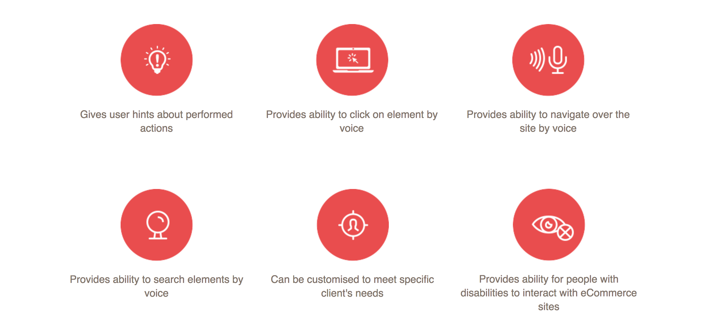

Happy Mole
driven by passionate peopleWhat are we up to?
The Department of Justice published the Americans with Disabilities Act (ADA) Standards for Accessible Design in September 2010.
These standards state that all electronic and information technology must be accessible to people with disabilities. The traditional ADA compliance solution has been for those suffering from low vision to adapt to existing technology.
Rather than improving the way we interact with today’s technology, the vast majority of tech companies are making users swipe their fingers across a screen and listen to a robotic voice describing all the elements of the page.
Then the solution ... ?
Modern technology capabilities that include natural language processing, information extraction, and speech recognition.
The solution - voice
We believe that ADA compliance will come to incorporate talking to the online solutions like web sites, applications with voice and natural speech. It is the most essential way to communicate with electronic devices — not just for those affected by low vision, senior people, but for all humans.
IntroducingHappy
Mole
Happy Mole allows users to perform interactions with websites with voice. Happy Mole helps low vision people to interact with site:
- users can navigate over your site
- click on links, buttons and other elements
- go through the menu sections
- select articles
- search information
- ask to read out loud the needed info
- request help
Product features
How it works?
- User opens some site (f.e "Fresh products" site)
↓
- User says some phrases, f.e "Happy Mole, please open vegetables category"
↓
- Computer records his voice, processes it, doing some magic stuff
↓
- Computer opens vegetables category in current browser tab
Why choose Happy Mole
- Happy Mole simplifies interaction with websites for low vision, senior people and all humans by providing ability to use their voice to navigate and perform actions through the website.
- Recognition of user voice commands is based on natural language processing methods and can be customized for each client needs.
- Customization for clients is based on gathering consumers requests,analyzing, postprocessing, creating paronyms pairs and extension of dictionary specific words, consumer's commands, ranging of frequently used requests. We are using machine learning algorithms for improving user experience for specific site.
- It's an easy to integrate tool.
How to integrate
That's super easy - just include a script to your site header.

Our team

Vladyslav Babenko
Team Power Builder
Yevhen Babenko
Hardcore geek
Halyna Dobrobog
Research Rockstar
Yana Mykhailenko
Technology evangelist
Andrii Vorobiov
Tech guruAlexandra Gertik
UX ninjaContact us
mail: info@happymole.io